<div class="sidebar">
    <h2 class="text-center ">Dashboard Climático</h2>
    <ul class="nav nav-pills flex-column">
        <li class="nav-item">
            <a [class]="this.router.url === '/'?'nav-link active':'nav-link'"  routerLink="/">
                
                Home
            </a>
        </li>
        <li class="nav-item">
            <a [class]="this.router.url === '/temperature'?'nav-link active':'nav-link'" routerLink="/temperature">
                
                Temperatura
            </a>
        </li>
        <li class="nav-item">
            <a [class]="this.router.url === '/precipitation'?'nav-link active':'nav-link'" routerLink="/precipitation">
                
                Precipitação
            </a>
        </li>
        <li class="nav-item">
            <a [class]="this.router.url === '/wind'?'nav-link active':'nav-link'" routerLink="/wind">
                
                Vento
            </a>
        </li>
        <li class="nav-item">

            <app-change-theme />
        </li>
    </ul>
    <div class="sidebar-footer text-center">
        <hr>
        <small>
            Desenvolvido por 
            <br> 
            <a href="https://www.linkedin.com/in/josé-augusto-faria-de-sousa-1b1a1125b">José Augusto Faria de Sousa</a>.
            <br> 
            APIS usadas:
            <a href="https://open-meteo.com">Open-Meteo</a>, 
            <a href="https://nominatim.org">Nominatim</a>.
        </small>
    </div>
</div>
